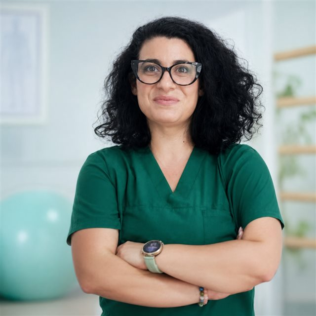
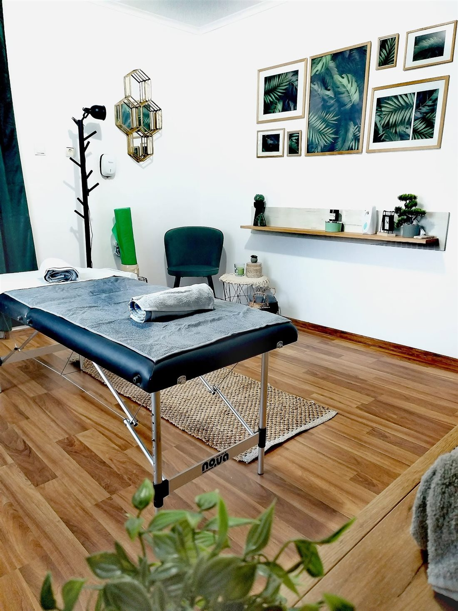
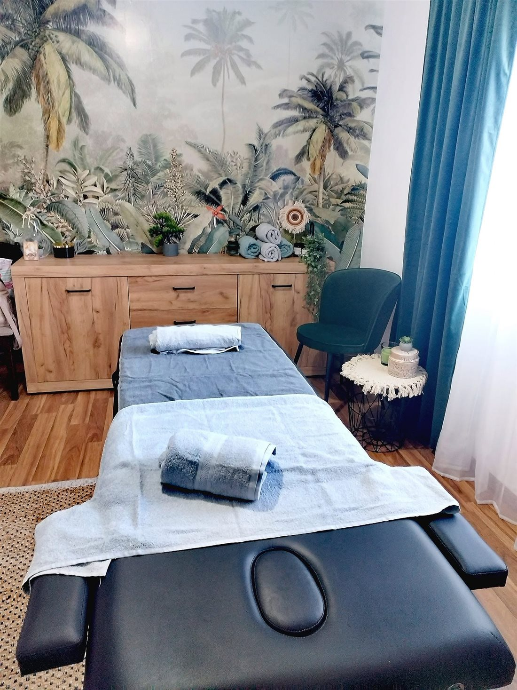

С какво можем да помогнем
Грижа според вашите нужди.
От първата оценка до ежедневните движения — с план, съобразен с вас.
Рехабилитация
Постепенно възстановяване на движението след операция или обездвижване.
За услугата Активна работаКинезитерапия
Подбрани упражнения за мобилност, сила, баланс и по-уверено движение.
За услугата Движение и комфортБолки в кръста
Индивидуална оценка и подход при болка, скованост и ограничено движение.
За услугата Грижа за тялотоЛечебен масаж
Мануална работа според оплакванията, напрежението и индивидуалния комфорт.
За услугата Стойка и контролШРОТ терапия
Контролирани упражнения с внимание към стойката, дишането и техниката.
За услугата Грижа за лицетоОстеоестетика за лице
Деликатна неинвазивна процедура с индивидуален подход. Продължителност 60–90 минути.
За услугатаВсички специализирани услуги

20+ години практикаЧовекът зад грижата
Запознайте се с Цветелина Драгомирова.
Кинезитерапевт, завършил Националната спортна академия, с над две десетилетия опит в рехабилитацията, физиотерапията и лечебния масаж.
Всяка програма започва с разговор и оценка. След това работим поетапно и адаптираме натоварването според вашето състояние и напредък.
Повече за специалиста и подходаПърво посещение
Ясни стъпки. Спокойно начало.
-
Стъпка 01
Обаждане
Разкажете накратко какво ви затруднява и уточняваме удобен час.
-
Стъпка 02
Индивидуална оценка
Обсъждаме оплакванията, движението и важните за вас ежедневни дейности.
-
Стъпка 03
План и проследяване
Подбираме подходяща програма и я адаптираме според напредъка.
Носете удобно облекло и наличните медицински документи, свързани с оплакването.
Продължителността и честотата на посещенията се уточняват според услугата и индивидуалния план.
Мнения и препоръки
Доверието започва с истински впечатления.
Прочетете препоръките за Цветелина във Facebook и разгледайте профила на центъра в Google.
Добре дошли в кабинета
Място за вас и вашето възстановяване.
Реални снимки от Physio Center Pernik.


Полезно преди посещението
Отговори на вашите въпроси.
Нека направим първата стъпка
Обадете се.
Ще обсъдим как да започнем.
Понеделник – петък, 08:00–18:00
Събота и неделя: почивни дни
Как да ни намерите
Кабинет на партер в Перник
ж.к. Красно село 19Б2300 Перник
При записване можем да уточним достъпа до входа и възможностите за спиране наблизо.
Отвори упътванеНосете наличните медицински документи и удобно облекло.